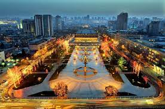

БАКУ
Baku is the capital of Azerbaijan, located on the shores of the Caspian Sea, on the southern part of the Absheron Peninsula, facing the Gulf of Baku. This port city on the Caspian Sea is located on one of the routes of ancient trade routes from Central Asia to Europe. Through western Baku, goods were transported north, through the Caucasus Mountains and the Black Sea, and further east through Istanbul and Turkey. Baku Bay, reliably protected from stormy winds, was a natural choice for every ship crossing the Caspian Sea. Due to this, the area was popular as the best port on the Caspian Sea. In addition to trade in foreign goods, there were extensive oil reserves here; reports of oil being obtained from open wells around Baku have been known since the Middle Ages. Oil, as a valuable commodity, was sold both in the west, to Europe, and in the east, across the Caspian Sea to Asia. All this allowed Baku to become an important and multicultural center in the Caucasus region. Since the times of the Roman Empire, the Caspian Sea has been its northern trade route and trade artery between Central Asia and the West. During excavations in the northern Caucasus, artifacts of Egyptian-Roman origin dating back to the beginning of the 5th century were discovered. BC, highlighting the region's important role in the movement of goods throughout Asia. Archaeological finds from Baku indicate that the city was founded several centuries BC and was thus historically shaped by trade and exchange, while playing an important role in the movement of goods from the east. The history of Baku goes back to ancient times, although the exact date of its origin is still unknown. The city began its true development in the 11th century, when it was ruled by the East Caucasian Shirvan Shahs. The medieval fortified city of Baku, one of the few surviving medieval cities in Azerbaijan, which contains several structures from this era, including defensive walls (Icheri Sheher) from the 12th century, a 27-meter tower (Giz Galasi) based on even earlier buildings from VII-VI centuries BC, and Synyk-Kala, a mosque and minaret of the 11th century. In the XIII-XIV centuries. Baku was under the rule of the Mongols and served as a strategic base for them to consolidate their power throughout Central Asia. After the collapse of the Mongol Empire, the city returned to the Shirvan Shahs, evidence of this is the fact of construction in the 15th century. Palace of the Shirvan Shahs. Then Baku was controlled by the Persian Safavids of the Ottoman Empire. Before becoming the capital of the Republic of Azerbaijan in 1920, the city was ruled by Russians. Thus, Baku turned into a center of trade and exchange of goods, providing transit of goods and people between the steppe and the West. The buildings and historical monuments of Baku testify to Zoroastrian, Christian and Islamic religious influences, and traces of the cultures of the Sassanians, Shirvans, Ottomans, Arabs, Persians and Russians have also been discovered, which played a significant role in shaping the current appearance of Baku.у превратился в центр торговли и обмена товарами, обеспечивая транзит грузов и людей между степью и Западом. Здания и исторические памятники Баку свидетельствуют о зороастрийских, христианских и исламских религиозных влияниях, также были обнаружены следы культур сасанидов, ширванов, османов, арабов, персов и русских, сыгравших заметную роль в формировании нынешнего облика Баку.